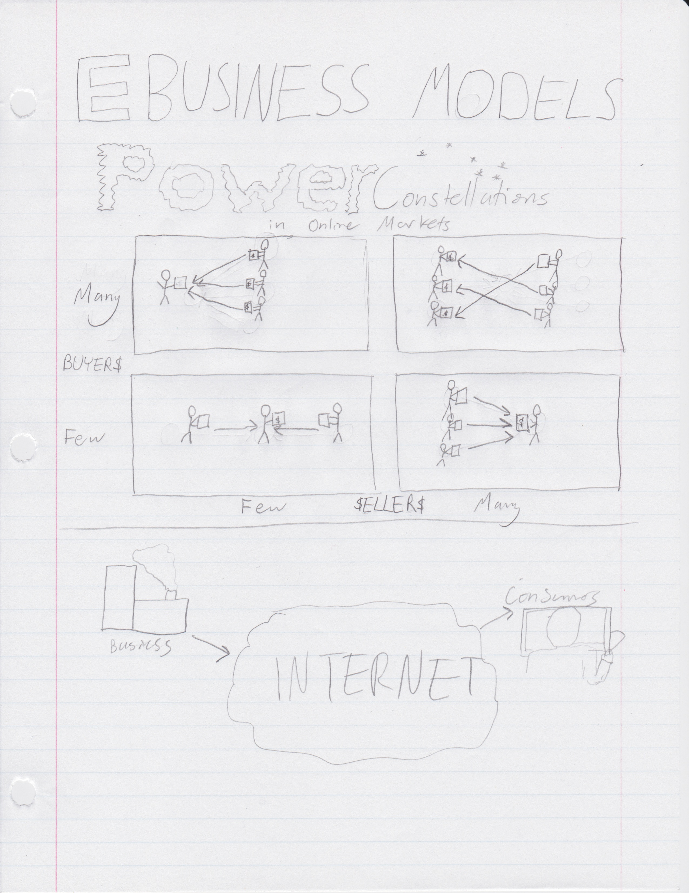

ITM-309 - E-Business Models
09/23/2013

Sketchnoting is a technique of drawing(or sketching), notes to get the big picture of ideas. It sounded very cool to me at the beginning but I personally didn't find it to be very practical. With exams coming up, I needed to make sure that I got down as many details as possible. While this was an interesting experience, I don't think I'll continue the use of it. Below, is the one sketchnote I took. The site structure has a section to hold many different sketchnotes but I only have the one.